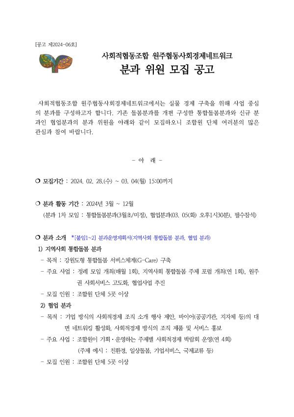
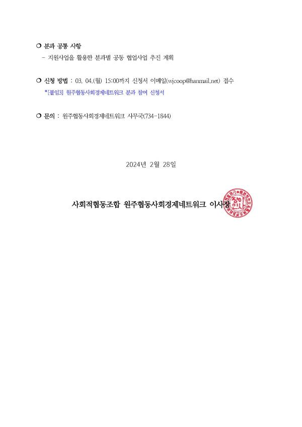

네트워크에서는 지난 해부터 실물경제 구축을 위해 사업 중심의 조합원 협업 모델 발굴에 노력하고 있는데요.
기존 돌봄분과를 개편 구성한 지역사회 통합돌봄 분과와 신규 분과인 협업 분과의 분과 위원을 모집합니다.
현 임원진을 중심으로 분과 운영을 추친하며, 세부 사업 계획을 바탕으로 한 사업 중심의 분과 구성을 통해 협업사업 발굴을 목표로 하고 있습니다.
3월 첫주 운영계획서를 기반으로 분과 모임을 진행하고, 논의 내용을 바탕으로 올해 공모사업 신청까지 준비하려고 합니다.
자세한 내용은 공고를 참조해주시면 되며, 분과 위원 신청은 3월 4일(월) 오후3시까지 이메일을 통해 신청서를 받고 있습니다.
궁금하신 사항은 네트워크 사무국으로 문의주시면 됩니다. 관심있는 조합원 분들의 많은 참여 부탁드립니다!